Digit Recognizer - kNN solution
This competition involves producing an algorithm that can predict a digit from an array of integers (in the range 0 - 255), each of which represent a pixel in a 28 * 28 greyscale bitmap of a hand-written digit.
The data is provided in the form of CSV files. The training data has 785 columns, the first column representing the digit the row represents, the remaing 784 being the pixel data. The first row is a header :
Fig. 1
label, pixel0, pixel1, pixel2, pixel3, pixel4, ......... pixe783
1, 0, 125, 0, 0, 0, ......... 0
7, 0, 0, 255, 0, 0, ......... 0
0, 0, 0, 0, 0, 0, ......... 0
9, 0, 0, 250, 0, 0, ......... 0
......
The test data is identical, with the exception that the first column is ommited (otherwise it would be too easy). The training data has 42000 rows, and the test data has 28000.
The algorithm
There are two established algorithms for this kind of problem, 'random forests', and 'k Nearest Neighbours' aka kNN. I am going to tackle the latter, in the first instance. The kNN algorithm involves:
- Calculate the 'distance' between the unknown, and each instance of the training data,
- take 'k' of these, with the lowest distance,
- find the majority classification among this set,
- ... and the majority 'class' is the prediction returned by the algorithm.
The first order of business, then, is to load the training data into something usable. A record type would seem a nice fit for this, something like:
Fig. 2
type ImageInstance = { Number:int; Pixels:int[] }
... where 'Number' represents the digit the row represents (col 1), and 'Pixels' is the array of pixels (the rest). Thus, we need to load all the rows in the csv, mapping to an instance of the record type.
Fig. 3
let parseTrainData path = File.ReadAllLines(path) //read lines into string[]
|> Array.map (fun line -> line.Split(',')) //split each line into string[] on comma
|> Seq.skip 1 //skip the header row
|> Array.ofSeq //turn the Seq back into Aray
|> Array.map (fun arr -> arr |> Array.map int) //map each string 'cell' to int
|> Array.map (fun arr ->
{Number = arr.[0]; Pixels = arr.[ 1 ..]}) //map each row to our 'ImageInstance' record
let trainingData = parseTrainData @"C:\kaggle\train.csv" //load the data
The classifier
The next order of business is to decide a way to measure the distance between 2 instances of our pixel array data. The standard method would be to take the absolute difference between each corresponding pixel value, and sum all of these differences. The maths, then, would be:
|
|
This translates to a F# function something like:
Fig. 4
let pointDiff ex1 ex2 = Array.map2(fun x1 x2 -> float (x1 - x2) ** 2.0) ex1 ex2
|> Array.sum
|> sqrt
... a function of type int[] -> int[] -> float. The Array.map2 function is used, which applies the given function to each member of the 2 given arrays, parwise. The cast to float is required, as sqrt only seems to accept floats. We are now in a position to implement the 'classifier' function, that will take an 'unknown' and find the 'best fit' classification, from our training data. My first attempt looked like this:
Fig. 5
let classifier (unknown: int[]) = let nearest = trainingData |> Array.minBy (fun ex -> pointDiff ex.Pixels unknown)
nearest.Number
It effectively sets the 'k' in kNN to 1, ie. returns the classification of the training data record, that has the lowest difference to the unknown passed in. This simple implementation is in fact surprisingly effective (as will presently become apparent).
Testing the algorithm
With this, everything is in place for testsing the algorithm. One way to do this, is to split the training data in two, using the larger part for training, and the remainder for testing. The error rate of the algorithm can then be estimated, by taking the proportion of mis-classified results, against the total.
Fig. 6
//split the training data in 2, 1:9
let unknowns,trainingData = trainingData.[0 .. trainingData.Length / 20],
trainingData.[trainingData.Length / 20 + 1 ..]
//map the 'unknowns' into tuples of 'actual value' * 'predicted value'
let predicted = unknowns |> Array.map(fun ex -> ex.Number, classifier ex.Pixels)
//calculate the error-rate
let errorrate = float (predicted
|> Seq.filter (fun (act,pred) -> act <> pred) //filter out from the predictions those that were misclasified
|> Array.ofSeq).Length / float (predicted.Length) //divide the number of those, but the total.
If you are coding along, now would be a good time to make a cup of tea .... the function that is actually running the alogirthm, is far from optimised. At this point, I in fact made a cup of tea, drank said cup of tea, did the washing up ... before giving up, and re-factoring:
Fig. 7
let predicted = unknowns |> Array.Parallel.map(fun ex -> ex.Number, classifier ex.Pixels)
.... which is all it takes to make the function parallel, in this case. You'll still be able to make a cup of tea or two, mind, but at least it is now using multiple cores. This gave me an error-rate of ~2.8%, which I think is remarkable ... but can we improve it?
Improved Classifier
A more idiomatic (and accurate) implementation of the classifier might be:
Fig. 8
let classByk (unknown: int[]) k =
let top1 = trainingData
|> Array.map ( fun ex -> ex.Number, pointDiff ex.Pixels unknown )//map the training data to tuples of 'Number', and difference
|> Array.sortBy (fun (ex,diff) -> diff) //sort by difference (asc)
|> Seq.take k // take first 'k' (ie. the 'k' least different (Number * Diff) tuples)
|> Seq.groupBy ( fun (n,diff) -> n) // group by 'Number'
|> Seq.maxBy ( fun (ky,sq) -> (sq |> Array.ofSeq).Length) // find the group with the most members
fst top1 // return the 'Number' for this group (fisrt of the tuple)
let predicted = unknowns |> Array.map(fun ex -> ex.Number, (classByk ex.Pixels 20), ex.Pixels)
This version of the classifier takes an additional parameter, k, which is the number of 'best fits' we want to take, from which we take the majority classification as the return value. With this improved classifier, the error-rate is 2.6%, correctly identifying an additional 11 unknowns (54 incorrect, as opposed to 65), with k of 20. It would be interesting to visualise these incorrectly classified examples ... it might give some indication of how to improve the algorithm. Below is a function to take a 'Pixels' int[], and turn it into a System.Drawing.Bitmap, which can then be saved to disk.
Fig. 9
let imgFromBytes (intAry:int[]) =
let bytes = intAry
|> Array.map (fun i -> 255 - i)
|> Array.map byte
|> Array.map (fun b -> [|b;b;b|])
|> Array.concat
let dim = int (sqrt(float (bytes.Length / 3))) //should be square 28 * 28, but we have mapped to 3 bytes per pixel,
let bmp = new Bitmap(dim , dim) //hence division by 3
let data = bmp.LockBits(Rectangle(Point.Empty,bmp.Size),Imaging.ImageLockMode.WriteOnly,Imaging.PixelFormat.Format24bppRgb)
do Marshal.Copy(bytes,0,data.Scan0,bytes.Length)
do bmp.UnlockBits(data)
bmp
Below are the 54 that were incorrectly classified.
| 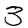 | 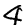 | 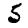 | 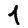 | 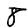 | 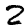 | 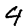 | 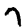 | 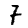 | 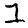 | 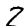 | 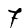 | 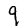 | 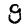 | 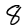 | 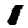 | 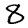 | 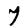 | 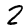 | 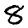 | 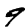 | 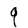 | 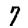 | 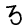 | 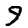 | 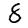 | 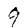 |
| 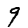 | 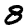 | 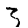 | 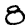 | 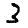 | 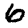 | 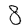 | 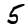 | 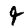 | 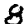 | 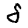 | 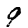 | 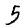 | 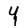 | 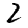 | 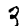 | 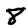 | 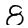 | 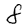 | 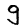 | 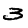 | 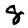 | 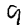 |
One thing that you might notice, is that some of these images are clipped at the bottom. We could perhaps improve the training dataset, by generating a series of images for each training row, that are translated on the horizontal axis, something like:
 |
The code to produce this series is below:
Fig. 10
let translate (number:ImageInstance)=
let emptyRow = Array.create 28 0
//split pixel[] into 28 * 28 2d array
let lines = seq {
for i in 0..28..28 * 27 do
let sub = Array.sub number.Pixels i 28
yield sub}|> Array.ofSeq
//trim the top 'i' rows, and append 'i' empty rows ot the bottom
let uptranslations = seq {
for i in 3..-1..0 do
let addedRows = (Array.create i emptyRow) |> List.ofArray
let tr = (lines.[i ..] |> List.ofArray) @ addedRows
yield {Number=number.Number; Pixels= (tr |> Array.ofList |> Array.concat)} } |> List.ofSeq
//trim the bottom 'i' rows, and add 'i' empty rows to the top.
let downtranslations = seq {
for i in 1..4 do
let addedRows = (Array.create (i-1) emptyRow) |> List.ofArray
let tr = addedRows @ (lines.[0..lines.Length - i] |> List.ofArray)
yield {Number=number.Number; Pixels = (tr |> Array.ofList |> Array.concat)}} |> List.ofSeq
Array.ofList (uptranslations @ downtranslations)
It actually doesn't improved the error rate enough to justify the 16 fold increases in memory usage and running time... so I am going to leave the algorithm as in Fig. 8, and submit my results. The final version of the script, can be found here
Next installment, we will implement a random forests algorithm to solevt he problem.